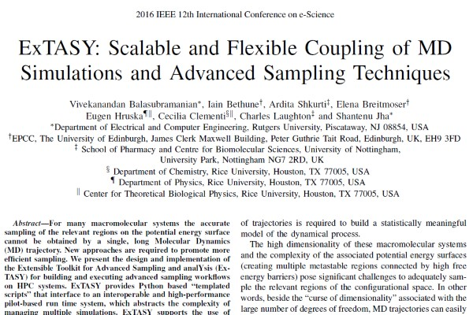
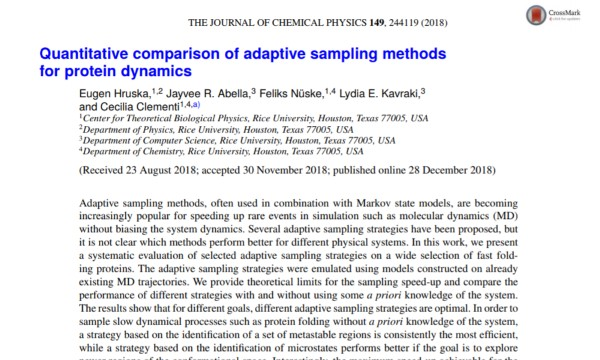
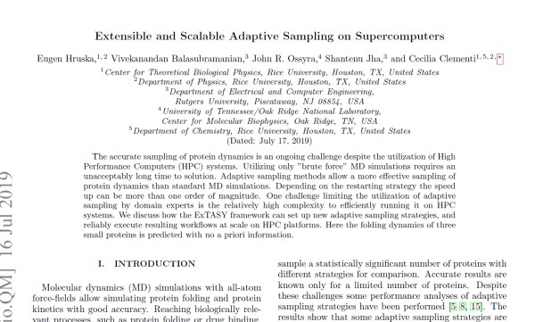

Quantitative Comparison of Adaptive Sampling Methods for Protein Dynamics
[1] Hruska, E.; Abella, J. R.; Nüske, F.; Kavraki, L. E.; Clementi, C. Quantitative Comparison of Adaptive Sampling Methods for Protein Dynamics. J. Chem. Phys. 2018, 149 (24), 244119. https://doi.org/10.1063/1.505358Abstract
For many macromolecular systems the accurate sampling of the relevant regions on the potential energy surface cannot be obtained by a single, long Molecular Dynamics (MD) trajectory. New approaches are required to promote more efficient sampling. We present the design and implementation of the Extensible Toolkit for Advanced Sampling and analYsis (ExTASY) for building and executing advanced sampling workflows on HPC systems. ExTASY provides Python based “templated scripts” that interface to an interoperable and high-performance pilot-based run time system, which abstracts the complexity of managing multiple simulations. ExTASY supports the use of existing highly-optimised parallel MD code and their coupling to analysis tools based upon collective coordinates which do not require a priori knowledge of the system to bias. We describe two workflows which both couple large “ensembles” of relatively short MD simulations with analysis tools to automatically analyse the generated trajectories and identify molecular conformational structures that will be used on-the-fly as new starting points for further “simulation-analysis” iterations. One of the workflows leverages the Locally Scaled Diffusion Maps technique; the other makes use of Complementary Coordinates techniques to enhance sampling and generate start-points for the next generation of MD simulations. We show that the ExTASY tools have been deployed on a range of HPC systems including ARCHER (Cray CX30), Blue Waters (Cray XE6/XK7), and Stampede (Linux cluster), and that good strong scaling can be obtained up to 1000s of MD simulations, independent of the size of each simulation. We discuss how ExTASY can be easily extended or modified by end-users to build their own workflows, and ongoing work to improve the usability and robustness of ExTASY.
ExTASY: Scalable and Flexible Coupling of MD Simulations and Advanced Sampling Techniques
[2] Balasubramanian, V.; Bethune, I.; Shkurti, A.; Breitmoser, E.; Hruska, E.; Clementi, C.; Laughton, C.; Jha, S. ExTASY: Scalable and Flexible Coupling of MD Simulations and Advanced Sampling Techniques. In 2016 IEEE 12th International Conference on e-Science (e-Science); IEEE: Baltimore, MD, USA, 2016; pp 361–370. https://doi.org/10.1109/eScience.2016.787092Abstract
Adaptive sampling methods, often used in combination with Markov state models, are becoming increasingly popular for speeding up rare events in simulation such as molecular dynamics (MD) without biasing the system dynamics. Several adaptive sampling strategies have been proposed, but it is not clear which methods perform better for different physical systems. In this work, we present a systematic evaluation of selected adaptive sampling strategies on a wide selection of fast folding proteins. The adaptive sampling strategies were emulated using models constructed on already existing MD trajectories. We provide theoretical limits for the sampling speed-up and compare the performance of different strategies with and without using some a priori knowledge of the system. The results show that for different goals, different adaptive sampling strategies are optimal. In order to sample slow dynamical processes such as protein folding without a priori knowledge of the system, a strategy based on the identification of a set of metastable regions is consistently the most efficient, while a strategy based on the identification of microstates performs better if the goal is to explore newer regions of the conformational space. Interestingly, the maximum speed-up achievable for the adaptive sampling of slow processes increases for proteins with longer folding times, encouraging the application of these methods for the characterization of slower processes, beyond the fast-folding proteins considered here.
Extensible and Scalable Adaptive Sampling on Supercomputers
[3] Hruska, E.; Balasubramanian, V.; Ossyre, J.R.; Jha, S.; Clementi, C. Extensible and Scalable Adaptive Sampling on Supercomputers. https://arxiv.org/abs/1907.06954Abstract
The accurate sampling of protein dynamics is an ongoing challenge despite the utilization of High Performance Computers (HPC) systems. Utilizing only "brute force" MD simulations requires an unacceptably long time to solution. Adaptive sampling methods allow a more effective sampling of protein dynamics than standard MD simulations. Depending on the restarting strategy the speed up can be more than one order of magnitude. One challenge limiting the utilization of adaptive sampling by domain experts is the relatively high complexity to efficiently running it on HPC systems. We discuss how the ExTASY framework can set up new adaptive sampling strategies, and reliably execute resulting workflows at scale on HPC platforms. Here the folding dynamics of three small proteins is predicted with no a priori information.